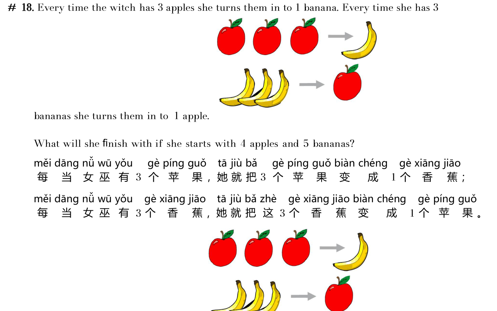

女巫每有 3 个苹果就变成 1 根香蕉；每有 3 根香蕉就变成 1 个苹果。如果开始有 4 个苹果和 5 根香蕉，她最终会剩下什么？
Every time the witch has 3 apples she turns them into 1 banana. Every time she has 3 bananas she turns them into 1 apple. She starts with 4 apples and 5 bananas. What will she finish with?

点按钮变水果。能变就继续变，直到不能再变。
Tap to convert. Keep going until no more moves.
选出你的答案：
Pick your answer: